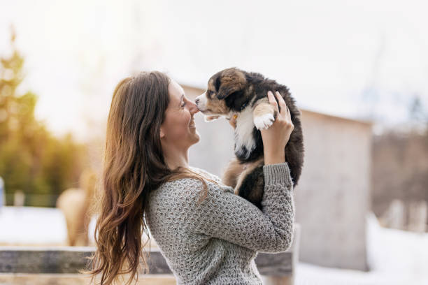

Analyse linguistique du mot adoption
Le sujet
Qu'est-ce qu'on a fait ?
Ce projet a été développé pendant le cours de Programmation et Projet Encadré (le fameux PPE entre les étudiants) du premier semestre de la première année de master Traitement Automatique des Langues.
Il s'agit d'analyser le comportement d'un mot dans différentes langues. À partir d'une série de traitements automatiques sur notre corpus, on analyse l'utilisation du mot et le contexte où il se trouve dans chaque langue choisie.
En gros, afin d'obtenir les résultats présentés dans ce site-ci, on a suivi les étapes suivantes :
1. Choix du mot ;
2. Choix des langues travaillées ;
3. Récupération des URLs ;
4. Création d'un script pour générer un tableau et pour récupérer le contenu textuel, le contexte et le code des URLs ;
5. Début de la création d'un site web en utilisant codes HTML ;
6. Création d'un script pour générer une base iTrameur ;
7. Génération des nuages de mots ;
8. Finalisation des détails du nouveau site.
Le choix du mot
Pourquoi « adoption » ?
Ce n'a pas été un travail facile de trouver un mot, étant donné que l'on travaille avec des langues assez différentes et qu'avant tout, on devait choisir le mot en français (la langue parlée pendant les cours), ensuite il fallait la traduire dans les langues choisies. Pendant longtemps, on insistait pour travailler avec un argot, « truc ». Ce premier mot était très intéressant du point de vue de la traduction, l'une des premières étapes du projet. Pourtant, le fait d'être un argot rend son utilisation très bornée. On a commencé nos recherches, cependant les ressources pour notre mot n'étaient pas suffisantes. De plus, les ressources trouvées étaient vraiment très limitées pour continuer toutes les autres étapes du projet.
Par conséquent, on a laissé tombé notre truc. On commençait, encore une fois, la laborieuse recherche d'un nouveau mot. Cette fois, on a voulu trouver un mot qui soit présent dans les discussions de nos pays, de façon aussi à nous aider à trouver des ressources suffisantes pour faire le traitement des liens à partir du script écrit. Alors on a pensé au mot « adoption ». On l'a trouvé curieux tout de suite puisqu'il présente des perspectives différentes dans nos langues. En polonais, on l'emploie très souvent dans le sens le plus basique (« adopter quelqu'un »), en utilisant diverses déclinaisons. En portugais, il s'agit d'un mot employé dans plusieurs contextes (comme vous pourrez le vérifier dans l'onglet « Résultats d'iTrameur »), parfois il est aussi employé même comme une catachrèse. Finalement, en russe, on a deux mots pour désigner la signification la plus basique, car cela dépendra si on parle d'une fille ou d'un garçon (et on ne peut pas parler d'« adoption d'un animal »). Il semblait donc intéressant d'observer le comportement de ces mots et leur environnement.
Nos hypothèses
Il est suggéré que les champs lexicaux du mot choisi sont différents dans chacune de nos trois langues. Cette hypothèse nous paraît naturelle, car, ayant pris le mot adoption dans le sens de la création d'un lien de filiation, nous n'avons pas pu ignorer la polysémie du terme en polonais et en portugais. En effet, le mot n'est monosémique que dans la langue russe qui se traduit d'ailleurs soit comme усыновление, s'il s'agit de l'adoption d'un garçon, soit comme удочерение lorsqu'on parle d'une fille. Tandis qu'en polonais et en portugais on peut également parler de l'adoption d'un animal ou d'une loi. Qui plus est, il existe dans la langue portugaise une autre signification, plus métaphorique, qui peut se traduire comme utilisation de quelque chose.
L'hypothèse est à tester au cours de notre travail, puisque les recherches préliminaires montrent déjà que les champs lexicaux en polonais et en russe sont quasiment identiques. Il faut donc explorer la fréquence de l'apparition du mot dans des contextes différents.
Une autre question intéressante est de savoir quel mot russe s'utilise le plus. Pour l'instant, on suppose que усыновление est plus courant. Reste à réunir plus de contextes.
Répartition du travail
En tant qu'une équipe bien soudée, nous avons travaillé ensemble sur la création du site et du script bash permettant de traiter les URLs. Ensuite, chacune de nous a analysé le mot dans sa langue (Alina : russe, Luísa : portugais, Sandra : polonais) et présenté ses résultats.
